November 05, 2026 · 2 articles
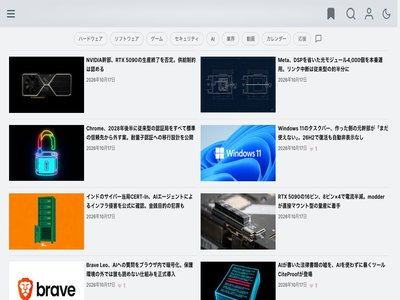
Zyxel GS1900 Zero-Day CVE-2026-107441 Bypasses Earlier Fix, With About 1,000 Devices Compromised
November 05, 2026
A separate zero-day, CVE-2026-107441, has been found in Zyxel's GS1900 series following the June fix for CVE-2026-7273. Exploit code works even on the patched firmware, requirin... (Joho no Todai)
Malware Lurked in NIKKE's PC Launcher for Five Weeks, With Remote Control and Password Theft Capabilities Confirmed
November 05, 2026
Players who played Goddess of Victory: NIKKE on PC may have exposed passwords, browser data, and cryptocurrency wallets to attackers. Legitimate files on the official CDN were t... (Joho no Todai)
November 04, 2026 · 63 articles
Legacy SonicWall GMS Has an Unauthenticated CVSS 9.1 Flaw, With No Fix Due to End of Life
November 04, 2026
A CVSS 9.1 vulnerability in SonicWall's legacy GMS management software allows internal files to be read without authentication. GMS has already reached end of life, and neither... (Joho no Todai)
What Democratic control of Congress means for cybersecurity
November 04, 2026
There’s a lame-duck session before Dems take over, but the leaders of the homeland security panels are already teeing up their agendas. The post What Democratic control of Congr... (CyberScoop)
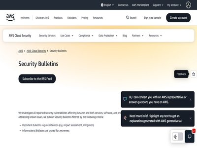
CVE-2026-122266 - Improper isolation of shared resources in aws-network-policy-agent in Amazon EKS
November 04, 2026
Bulletin ID: 2026-170-AWS Publication Date: 11/04/2026 13:30 PM PST Description: We identified CVE-2026-122266, an issue in Amazon EKS Network Policy Agent (aws-network-policy-a... (AWS Security Bulletins)

Apple turns iCloud into spy cloud, will start looking at public share links
November 04, 2026
Content shared with anyone who has the URL will be scanned for 'harmful content,' though the iMaker hasn't defined that term (The Register - Security)

Critical Rails Bug Threatens to Derail Vulnerable Servers
November 04, 2026
An attacker could write arbitrary files and read sensitive files via images uploaded to the Rails Active Storage ImageMagick integration, possibly positioning a threat actor for... (Dark Reading)

Vercel rolls out new protection against stolen session cookie attacks
November 04, 2026
Vercel is gradually rolling out Device Bound Session Credentials (DBSC) on its platform as a key defense against information stealer malware. [...] (BleepingComputer)
More Asian airlines announce data breaches after attack on Spanish IT provider Amadeus
November 04, 2026
Japan Airlines, Cathay Pacific, Korean Air, Asiana Airlines, Singapore Airlines and Malaysia Airlines have all come forward over the last week to report data breaches traced bac... (The Record)

Two Barracuda ESG Flaws Could Be Combined for Full Root Access; Patches Released
November 04, 2026
Barracuda patched two flaws that can be chained to give attackers root access to Email Security Gateway appliances. Barracuda has patched two vulnerabilities that can be chained... (Security Affairs)
Zyxel fixes zero-day exploited to hack nearly 1,000 network switches
November 04, 2026
Zyxel has patched a zero-day vulnerability in its GS1900 series network switches that hackers exploited to compromise nearly 1,000 devices worldwide and steal configuration file... (BleepingComputer)
DreamHost confirms data breach exposed FTP logins and webmail sessions
November 04, 2026
DreamHost is warning of a data breach after attackers gained access to its File Manager platform for two months and stole customers' FTP/SFTP usernames and passwords. [...] (BleepingComputer)
Cyberattack Hits French Blood Banks as Hackers Target Refrigeration Systems Across Europe
November 04, 2026
Cyberattacks disrupted refrigeration monitoring systems at three French blood banks, amid similar attacks targeting European supermarkets. A cyberattack has hit three regional b... (Security Affairs)
Bare metal boom: On-prem server sales for HPC and AI up 20% this year
November 04, 2026
Firms still want kit on-premises, but spike in revenue is as much about increased costs as higher sales (The Register - On-Prem)

Helping you build and defend at machine-speed in the agentic era
November 04, 2026
As both a frontier lab and the operator of the world's most comprehensive threat intelligence network, Google occupies a unique vantage point: We see exactly how Large Language... (Google Cloud Blog)
Google, Partners Disrupt 1.3 Million-Device-Strong XCPE Botnet
November 04, 2026
Google alleges that Android device manufacturer Videostrong ran the operation, which infected set-top boxes and IoT devices with a backdoor to create infrastructure for criminal... (Dark Reading)

Researchers Uncover Prompt Adware Hidden in OpenAI Codex Jailbreak Toolkit
November 04, 2026
Cybersecurity researchers have disclosed details of an OpenAI Codex jailbreak bundle that's designed to modify an artificial intelligence (AI) agent's trusted instructions to in... (The Hacker News)
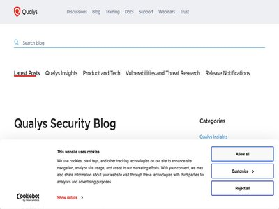
Cloud Agent, now in a Container: Host Security for Nodes You Can’t Touch
November 04, 2026
A single container image that brings Vulnerability Management and Policy Audit to every Kubernetes node, on immutable and mutable Linux alike, deployed the way your container wo... (Qualys Blog)
WordPress Core Update Flaw Allows Code Execution: CISA Confirms Active Exploitation
November 04, 2026
US agency CISA has added CVE-2026-119977, a vulnerability allowing unauthenticated code execution during WordPress core updates, to its Known Exploited Vulnerabilities catalog.... (Joho no Todai)
Debian APT Flaw Allows Package Substitution After Signature Verification: All Supported Ubuntu Releases Also Affected, CVSS 7.7
November 04, 2026
CVE-2026-109518, a vulnerability in Debian's APT package management tool, allows packages to be substituted after they pass signature verification, potentially enabling arbitrar... (Joho no Todai)
Google Calendar phishing campaign hijacks sessions, bypasses MFA
November 04, 2026
A phishing campaign used Google Calendar invites, trusted redirects, and fake login pages to hijack corporate Google sessions and bypass MFA protections. Material Security exami... (BleepingComputer)

China-Aligned Group Abuses Sogou Input Method to Deliver Malware
November 04, 2026
SlippyNunchucks used DNS hijacking to turn Sogou brand promotions into a malware channel (Infosecurity Magazine)

Cycurion Habit verifies threats and validates fixes before closing cases
November 04, 2026
Cycurion has launched Habit, an AI-driven security operations center (SOC) built to identify threats before they disrupt operations. The launch also marks Cycurion’s repositioni... (Help Net Security)
Russian hackers target iOS and Android users with n-day exploits
November 04, 2026
Russia’s APT29 has been using compromised websites, lookalike domains and a hijacked web analytics service to target iOS and Android users with exploits for patched flaws and st... (Help Net Security)

Sysdig Adds Runtime Security and Governance for AI Agents
November 04, 2026
Sysdig’s platform uses runtime visibility to track AI agent actions and block risky behavior before it reaches production systems. The post Sysdig Adds Runtime Security and Gove... (SecurityWeek)
Descope Envoy brings AI agent authentication to consumer apps
November 04, 2026
Descope has announced Envoy, a set of capabilities that gives personal AI agents a delegated sign-in path alongside a consumer app’s existing authentication flows. Consumer comp... (Help Net Security)
Incidents Move Too Fast for Pen & Paper
November 04, 2026
Organizations may not be ready for completely autonomous communication processes, but there are places where automating information updates would alleviate pressure. (Dark Reading)
Citrix expands oversight of autonomous browsing and AI agent activity
November 04, 2026
Citrix has announced new capabilities across Citrix SecurSpaces, Citrix SecurAccess and Citrix Platform Flex designed to help organizations securely deploy AI agents, govern AI-... (Help Net Security)
Agentic Data Security Firm Sentra Raises $150 Million
November 04, 2026
The company will invest in agentic data security capabilities and expand its go-to-market organization. The post Agentic Data Security Firm Sentra Raises $150 Million appeared f... (SecurityWeek)
Live Q&A: CISSP exam prep with ISC2 experts
November 04, 2026
Join ISC2 on November 6, 2026 at 7:00pm CET for a live Q&A about the CISSP exam. A panel of experts will answer your questions, explain what it takes to earn the certification,... (Help Net Security)

VerifiedIDA | Making LLM-Driven Reverse Engineering Inspectable, Continuable and Reusable
November 04, 2026
LLM reverse engineering scales only if analysis stays inspectable. A new standard and its open-source IDA Pro implementation tie annotations to evidence. (SentinelLabs)

See the agents, set the terms: new visibility and control for personal agents
November 04, 2026
Personal AI agents have changed how users interact with the web, blurring the lines between automated and human traffic. Learn how Cloudflare gives site owners visibility and co... (Cloudflare Blog)
Cyberattack wipes cloud data at major Russian hosting provider Beget
November 04, 2026
A major Russian web hosting provider is struggling to restore its services after a cyberattack destroyed data across its cloud infrastructure and disrupted hundreds of websites. (The Record)

The Classics Return: Vulnerable E-Mail Scripts, (Wed, Nov 4th)
November 04, 2026
One of the early web application vulnerabilities I remember was CVE-2000-0411 [CVE]. This was a simple vulnerability in a CGI-bin script used to send e-mail. The vulnerability w... (SANS ISC)
Impart uses AI to build virtual patches without putting models in the traffic path
November 04, 2026
Impart Security has launched the Runtime Defense Harness, a controlled environment where AI agents write and test virtual patches for new vulnerabilities without putting AI in t... (Help Net Security)
AI-Linked Breaches Mount as WorkOS, Northflank, Trigger.dev Disclose Hacks
November 04, 2026
Hackers have been harvesting AI access tokens and have been using AI-assisted offensive tools to automate attacks. The post AI-Linked Breaches Mount as WorkOS, Northflank, Trigg... (SecurityWeek)
Canadian Extradited to US Over Cryptomining Hacks on University Supercomputers
November 04, 2026
A federal grand jury indicted two Canadian men for hijacking university supercomputers to secretly mine Electroneum cryptocurrency. The post Canadian Extradited to US Over Crypt... (SecurityWeek)
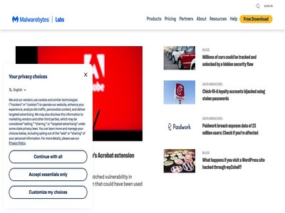
Chrome 157 fixes 213 security issues, including 7 critical flaws
November 04, 2026
Your browser may not have updated itself yet. Here’s how to check your version and install the fix manually. (Malwarebytes Labs)
3AM Ransomware Used Human-AI Hybrid Tactics in UK School Estate Compromise
November 04, 2026
Bitdefender highlighted a unique human-AI approach during a September attack on a UK school estate, which resulted in financial data being exfiltrated (Infosecurity Magazine)
Xen Hypervisor Flaws Let One Malicious VM Read and Write Any Other VM's Memory
November 04, 2026
Two flaws in the Xen hypervisor allow a malicious guest virtual machine (VM) to read and write the memory of other VMs on the same host, including dom0. Dom0 is the VM that, by... (The Hacker News)
Excel KB5002934 Reintroduces September's Paste Bug in October: Only the Build Number Identifies the Fix
November 04, 2026
Excel's paste bug returned in October security update KB5002934. Microsoft released a fix with the same KB number and a new build, so the KB number alone cannot identify the cor... (Joho no Todai)
Radio With No Radar: Why Agent Runtime Security Fails Without the Layers Beneath It
November 04, 2026
Nearly every agent security pitch now ends on the same promise: the product stops the bad action in real time. The promise holds for one kind of agent, the kind whose traffic pa... (The Hacker News)
Poisoned cPGuard update hits thousands of web hosting servers
November 04, 2026
An attacker has compromised the update infrastructure of cPGuard, a security suite for Linux web hosting servers, and pushed out a malicious update to nearly 3,000 customer serv... (Help Net Security)
Police Seize 100+ Servers After Four-Year Investment Fraud Probe
November 04, 2026
A German-led coalition of law enforcers has intensified efforts to strike at a €4m investment fraud scheme (Infosecurity Magazine)
Rigged Coding Assignment, Abused AI Tool Opened Path to $6 Billion Binance Heist
November 04, 2026
Binance’s first incident report traces the record theft to a months-long campaign that compromised three engineers’ computers. The post Rigged Coding Assignment, Abused AI Tool... (SecurityWeek)
CVE-2026-58868: Critical Android Bug Could Let Attackers Run Remote Code
November 04, 2026
Critical Android flaw CVE-2026-58868 could allow remote code execution without user interaction on devices running Android 14 through 17. Google has fixed CVE-2026-58868, a crit... (Security Affairs)
North Korea Launches Missiles Toward the Sea as Pyongyang Protests Against US Claims on Binance Hack
November 04, 2026
In recent months, North Korea has accelerated its weapons tests in a likely bid to increase its leverage in potential diplomacy with the US. The post North Korea Launches Missil... (SecurityWeek)
PHP2Shell on Windows and macOS: Automating the PHP Upgrade, With or Without an Agent
November 04, 2026
Executive Summary PHP2Shell (CVE-2026-109618 and CVE-2026-109619) allows unauthenticated remote code execution on exposed PHP servers. PHP has released fixed versions. On Linux,... (Qualys Blog)
Meta Shares Top Muse Bug Bounty Findings as Payouts Reach $1.2 Million
November 04, 2026
A $300,000 award went to a pre-launch flaw that exposed conversations and tokens on internal Muse test VMs used by Meta staff. The post Meta Shares Top Muse Bug Bounty Findings... (SecurityWeek)
Russian Police Arrest 3 Suspected VasyGrek Hackers, Dismantle Criminal Infrastructure
November 04, 2026
Russian authorities have arrested three suspected members of a threat group known as VasyGrek and dismantled its criminal infrastructure. Also known as Fluffy Wolf, the threat a... (The Hacker News)

CrowdStrike Extends the Agentic SOC to Detect and Stop Agent Insider Threats
November 04, 2026
(CrowdStrike Blog)
CrowdStrike Introduces Agentic Adversary Emulation to Counter AI-Enabled Adversaries
November 04, 2026
(CrowdStrike Blog)
CrowdStrike Brings Enterprise Browser Security to the Falcon Platform
November 04, 2026
(CrowdStrike Blog)
New Falcon Cloud Security Innovations Secure the Cloud AI Runs On
November 04, 2026
(CrowdStrike Blog)

Linux Kernel Remote Code Execution
November 04, 2026
What is the Attack? FortiGuard Labs is monitoring CVE-2026-98432, a critical use-after-free vulnerability in the Linux kernel's IPv4 networking subsystem that could allow an una... (FortiGuard Labs)
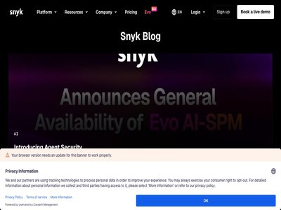
Snyk Named a Leader in The Forrester Wave™: Agentic Development Security Tools, Q4 2026
November 04, 2026
Snyk is a Leader in The Forrester Wave™: Agentic Development Security Tools, Q4 2026, with the highest score in the strategy category. (Snyk Blog)
Philippine Migrant Worker Data Likely Leaked in 69GB Government Breach
November 04, 2026
An unknown operator appears to have exfiltrated SQL Server backups from the Philippine Overseas Employment Administration in under a half hour. (Dark Reading)
Phishing-Resistant Isn't Enough; Yubico Takes Aim at Identity-Verification Gap
November 04, 2026
The new YubiID service bridges identity verification with credential enrollment and recovery across existing identity platforms, closing a phishing-resistant authentication gap.... (Dark Reading)
Risky Bulletin: Hackers lock out and extort Li Auto EV owners in Russia
November 04, 2026
In other news: Second refrigerator hack hits Europe; US boots Acronis from government networks; distros patch Linux kernel RCE. (Risky Business News)
Stolen Corporate AI Access Resold for $60 a Month: Google Details LLMJacking, With Charges Reaching $1 Million
November 04, 2026
Google's security teams published findings on LLMJacking, in which attackers steal companies' cloud AI access and resell it to others. Unauthorized usage charges exceeded $100,0... (Joho no Todai)
Ivanti Connect Secure Zero-Day Exploitation
November 04, 2026
What is the Attack? FortiGuard Labs is monitoring active exploitation of multiple zero-day vulnerabilities affecting Ivanti Connect Secure (ICS), an enterprise remote access VPN... (FortiGuard Labs)

What one organization revealed about AI agent risk
November 04, 2026
One company monitored AI agent activity for a month. See what Sysdig AI Defense found, from unapproved agents to unlogged credential reads. (Sysdig Blog)
Introducing Sysdig AI Defense: See, stop, and prove what agents do
November 04, 2026
Sysdig AI Defense is runtime security and governance for every AI agent your teams run, from the laptop where an agent starts its work to the cloud where its actions land. It st... (Sysdig Blog)

Monitoring AI agent sessions: Leveraging embedding models to aid threat hunting and attack discovery workflows
November 04, 2026
I tested vector search on 7,454 turns of my own agent sessions. One in seven sessions needed review, the agent’s reasoning carried more signal than the prompt, and the stored ve... (Elastic Security Labs)
When trust becomes the payload: Inside the threats, etc quarterly report
November 04, 2026
The newest threats, etc report details how adversaries are weaponizing trust across the entire enterprise stack, abusing everything from AI assistants and npm supply chains to i... (Elastic Security Labs)
November 03, 2026 · 55 articles
Synology Warns of Ransomware Attacks Targeting NAS Devices Running Outdated DSM Versions
November 03, 2026
Synology warns of ransomware attacks exploiting a 2024 flaw in outdated NAS devices, urging users to update DSM immediately. A security fix released in 2024 is now at the centre... (Security Affairs)
CrowdStrike moves to acquire Fiddler and Dreadnode, adding AI observability and testing to its security platform
November 03, 2026
CrowdStrike is extending its platform to watch, test and explain autonomous AI agents, as enterprises face behavior-based risks that conventional security tools cannot catch. Th... (CyberScoop)
Hackers Exploit BTCPay Server Flaw to Steal Cryptocurrency
November 03, 2026
Attackers drained hot wallets on outdated BTCPay Server instances, with $1.63m traced so far (Infosecurity Magazine)
Britain on notice: AI-powered ransomware attacks to arrive by 2028
November 03, 2026
Cyber agency warns critical infrastructure is a likely target as chief urges bosses to stop doing 'tech on the cheap' (The Register - Security)
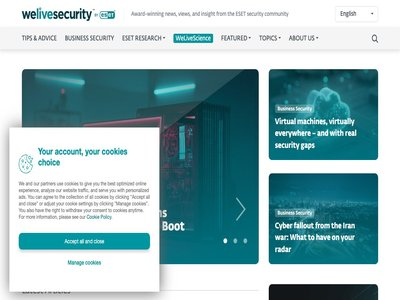
Gorbag: Orcs at the border harvesting intelligence from Ukraine
November 03, 2026
ESET researchers uncover Gorbag, a Russia-aligned group using simple infostealers to harvest data from Ukrainian organizations near the front line (ESET WeLiveSecurity)
Attackers Exploit Critical Siemens IoT2050 Flaw to Plant Remote Command Backdoors
November 03, 2026
A maximum-severity security flaw impacting Siemens SIMATIC IoT2050 Advanced devices has come under active exploitation, VulnCheck has revealed. The vulnerability, tracked as CVE... (The Hacker News)

Tech Firms Dismantle Botnet That Turned 1.3M TV Boxes Into Proxies
November 03, 2026
Google said today it worked with industry partners to dismantle a botnet made up of more than 1.3 million Android TV set-top boxes that ship with malicious software which secret... (KrebsOnSecurity)
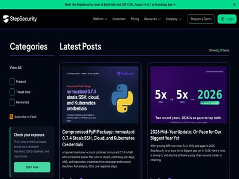
Binance’s $6.34 Billion Hack: Developer Machines, AI Tooling, and Wallet Signing
November 03, 2026
Binance’s November 3 findings reveal a path from a malicious coding assignment to wallet signing. Explore developer-machine controls and response guidance. (StepSecurity Blog)
Fresh European Fridge Attacks Put Cold-Chain Security in Focus
November 03, 2026
Beyond food storage, the same combination of Internet connectivity, remote access, and inadequate security practices can put temperature-controlled infrastructure across other c... (Dark Reading)
North Korean fake job interview led to $6.3B Binance heist
November 03, 2026
'It was not a single isolated breach or a simple phishing incident,' exchange says (The Register - Security)
Germany Busts 'Crime-as-a-Service' Investment Fraud Outfit
November 03, 2026
German police led a multinational probe that exposed an alleged crime-as-a-service provider supplying fraudulent trading platforms to investment scammers. (Dark Reading)
Defense and aerospace firm settles with government over allegedly failing to meet cybersecurity contract requirements
November 03, 2026
ILC settled for $13 million, and its parent company said it resolved the issues before settling without an admission of liability. The post Defense and aerospace firm settles wi... (CyberScoop)
WorkOS says attacker used ARTEX AI to breach internal sales app
November 03, 2026
Developer platform WorkOS suffered a data breach after a threat actor accessed business contact records and summaries of customer communications. [...] (BleepingComputer)
AI policy wonks declare 'sovereign agents' a threat to civilization
November 03, 2026
These are AI agents that operate outside of human control and 'pursue open-ended, evolving survival' (The Register - Security)
CVE-2026-115413 - AWS API MCP Server OAuth token audience validation bypass
November 03, 2026
Read this article (AWS Security Bulletins)
Oklahoma man charged with mailing threats, substances to election officials nationwide
November 03, 2026
Robin Patrick Martin was charged with conveying false or misleading information and hoaxes and mailing threatening communications in an effort to intimidate election officials.... (CyberScoop)
Fake-download campaign uses trojanized installers to deliver monetization payloads
November 03, 2026
Microsoft Threat Intelligence tracks a fake-download campaign that uses trojanized Inno installers to deliver multiple monetization offers and provides detection and investigati... (Microsoft Security Blog)
Europol dismantles investment scheme that impacted potential victims in 50 countries
November 03, 2026
Authorities seized more than 100 servers and searched locations linked to the alleged operation across 17 countries. The post Europol dismantles investment scheme that impacted... (CyberScoop)
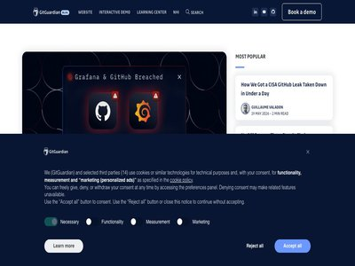
What Is a High-Impact Leak? How to Rank Compromised Credentials by Real Risk
November 03, 2026
Validation-only triage misses 46% of critical secrets because they can’t be verified automatically. Here’s how to rank compromised credentials by what they can actually reach, a... (GitGuardian Blog)
9 Cyber Awareness Tips That Actually Match Today's Maze of Threats
November 03, 2026
Practical guidance on safer search, stronger login security, better executive protection, and other habits that help reduce enterprise risk. (Dark Reading)
LLMjacking Emerges as Thriving Cybercriminal Enterprise
November 03, 2026
Cybercriminals have turned reselling cloud access to LLMs into a lucrative business model, with some victims paying as much as $1 million in resource consumption before access w... (Dark Reading)
Gartner Predicts SOCs Will Have 50% More Engineers Than Analysts by 2028
November 03, 2026
Gartner predicts that security operations centers will have 50% more engineers than analysts by 2028 as AI agents take over routine alert handling. Prophet Security examines how... (BleepingComputer)
Huntress + Hudu Integration: Security Context in Your IT Docs
November 03, 2026
Hudu's new Huntress integration brings your Huntress organizations, agents, memberships, and identities into Hudu. See what it does, how to set it up, and how Hudu built it on t... (Huntress Blog)
Frontline Education Data Breach Impacts Over 1.3 Million
November 03, 2026
Hackers exploited a flaw in third-party software and stole the personal information of school district staff and students. The post Frontline Education Data Breach Impacts Over... (SecurityWeek)
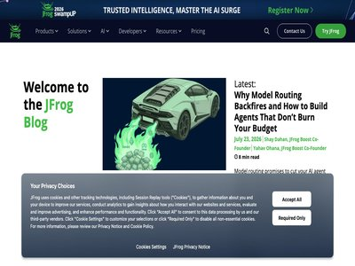
bREACHYing the Perimeter: How One HTTP Request can Hijack your AI Robot
November 03, 2026
Software supply chain attacks are on the rise, and naturally taking the headlines. But with the rise of localized models and common software embedded into smart “things”, risks... (JFrog Security Research)
A hidden backdoor put 1.3 million TV boxes to work for criminals
November 03, 2026
Videostrong planted a backdoor in more than 1.3 million Android set-top boxes and sold criminals access to the resulting botnet. (Malwarebytes Labs)
Novee puts forgotten internet-facing assets through penetration testing
November 03, 2026
Novee’s External Surface Testing is a new capability in its AI penetration testing platform that helps security teams discover internet-facing assets and validate exploitable vu... (Help Net Security)
Introducing Zero Wire, a hub for investigating critical Internet vulnerabilities
November 03, 2026
Zero Wire on Cloudflare Radar pairs plain-language briefings with global attack telemetry and remediation steps. Triage critical CVEs faster and decide how to protect your infra... (Cloudflare Blog)
3AM Affiliate Embraces AI-Like Loops in European School Attack
November 03, 2026
Evidence suggests a model may have generated and revised commands during the ransom gang's breach, though researchers stopped short of claiming full automation. (Dark Reading)
Assured helps recovery teams find clean backups after ransomware attacks
November 03, 2026
Assured Data Protection has announced CleanRoom SCAN, a new managed service designed to strengthen cyber recovery by independently scanning isolated backup data using multiple l... (Help Net Security)
Wuffy the Toy Dog and the Money Trail to Kremlin
November 03, 2026
A $30 AI toy dog led Mastercard to 250+ scam sites. See how small charges and ransomware payouts follow the same money trail, and how to cut it off. (Huntress Blog)
Drax wants to feed Britain's AI habit with £20B datacenter at biomass power station
November 03, 2026
But first it needs planning permission, government approval and, rather importantly, a customer (The Register - On-Prem)

AI Outside Your Pipelines: Orca Extends AI AppGen Security to Base44’s Compliance API
November 03, 2026
For years, software reached production through checkpoints security controlled: a ticket, a code review, a CI gate and a security sign-off. AI app builders skip all of them. An... (Orca Security Blog)
Malicious Files: Find What Supply Chain Attacks Leave Behind in Your GitHub Repositories and on Developer Machines
November 03, 2026
StepSecurity Malicious Files finds files planted by Miasma, Shai-Hulud and other supply chain attacks in GitHub repositories and on developer machines. (StepSecurity Blog)
AI agents scale and speed up Chinese-linked attacks
November 03, 2026
A China-nexus espionage group used AI agents to attack more than 200 organizations in 11 days, CrowdStrike said last week. On Monday, Kaspersky published details of a separate c... (Help Net Security)
Critical Node-RED Flaw Exploited in Attacks
November 03, 2026
Multiple attacks from the same IP address attempted to deploy various payloads, including a Linux bot and webshells. The post Critical Node-RED Flaw Exploited in Attacks appeare... (SecurityWeek)
Google adds new $250,000 Cloud VRP reward for Root-in-Cloud bugs
November 03, 2026
Google has expanded its Cloud Vulnerability Reward Program (VRP) with a new top-tier reward for high-impact architectural security flaws. [...] (BleepingComputer)

AIs Hacking the Law
November 03, 2026
In both a 2021 essay and my 2022 book, A Hacker’s Mind , I talk about AIs finding vulnerabilities and exploits-hacking-the legal system. Here’s some demonstrations of this from... (Schneier on Security)
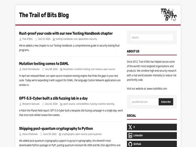
The cryptography behind electronic voting (and why paper ballots are still essential)
November 03, 2026
As millions of Americans vote in today’s U.S. midterms, most will use paper ballots, which are protected by strict chain-of-custody protocols and, in some cases, statistical aud... (Trail of Bits Blog)
Revolve card breach: 1.5 million people may be affected
November 03, 2026
Revolve says shoppers’ saved card details were stolen. A Texas filing suggests as many as 1.5 million people may be affected. (Malwarebytes Labs)
Red Hat Patches 9.8-Rated Linux TCP RCE Flaw While Ubuntu Releases Fixes for Testing
November 03, 2026
Fixed kernels for a use-after-free vulnerability in the Linux kernel's IPv4 TCP code are now available for Red Hat Enterprise Linux 8, 9, and 10, while Ubuntu's fixes for its th... (The Hacker News)
The 4 Elements of Exposure Prioritization and How to Operationalize Them
November 03, 2026
Your team is remediating more vulnerabilities than ever, yet your breach risk has barely changed. You’re spending too much time and effort on exposures attackers may never explo... (The Hacker News)
CISA’s new strategy runs into America’s blind trust problem
November 03, 2026
Persistent credentials and forgotten software approvals leave essential operational networks vulnerable under CISA’s latest cybersecurity roadmap. The post CISA’s new strategy r... (CyberScoop)
Gorbag APT group hits Ukrainian courts and city councils with self-deleting malware
November 03, 2026
ESET has been tracking a Russia-aligned group it calls Gorbag, which has been breaking into Ukrainian organizations since at least February 2025 using spearphishing attachments... (Help Net Security)
UK Cyber Chief Says the UK Will Face AI Cyberattacks on Critical Infrastructure by 2028
November 03, 2026
The U.K. will likely face AI cyberattacks on its critical infrastructure by 2028 as criminals and states, including China and Russia, increasingly use AI in their cyber activity... (SecurityWeek)
OpenAI raises top bug bounty payout to $172,000 with bonuses
November 03, 2026
OpenAI increased its security bug bounties to encourage independent researchers to find vulnerabilities in its software. The program now offers bonuses for high-quality reports.... (Help Net Security)
NATO’s Crossed Swords Exercise Brings AI Agents Into Cyber Operations Training
November 03, 2026
The NATO CCDCOE exercise in Estonia introduces AI agents and OpenAI Daybreak into joint cyber and kinetic operations training. The post NATO’s Crossed Swords Exercise Brings AI... (SecurityWeek)
CrowdStrike Advances AI Security and Safety from Endpoint to Cloud
November 03, 2026
(CrowdStrike Blog)
Introducing AI Kill Switch: Taking Control When AI Agents Go Rogue
November 03, 2026
(CrowdStrike Blog)
CrowdStrike Secures AI Agents Inside Claude Cowork
November 03, 2026
(CrowdStrike Blog)
NIS2 Makes Board Members Personally Liable for Access Control Decisions
November 03, 2026
NIS2 Article 20 makes management bodies answerable for the access controls they approve, and boards are starting to ask for proof that those controls work. NIS2 board accountabi... (Security Affairs)
Apple’s spyware notifications reach the Bundestag: what the BSI says to do now
November 03, 2026
Apple warns German Bundestag lawmakers of mercenary spyware attacks; BSI urges victims to assume compromise. The German government is warning politicians and public figures that... (Security Affairs)
ISC Stormcast For Tuesday, November 3rd, 2026 https://isc.sans.edu/podcastdetail/10162, (Tue, Nov 3rd)
November 03, 2026
(SANS ISC)
Security briefing: October 2026
November 03, 2026
(Sysdig Blog)
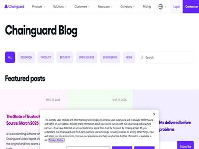
It’s a man’s, man’s, man’s world: Every manual page in Chainguard OS, now readable by your agent
November 03, 2026
AI coding agents need accurate documentation. See how Chainguard makes Linux manual pages searchable, version-specific, and accessible through MCP. (Chainguard Unchained)